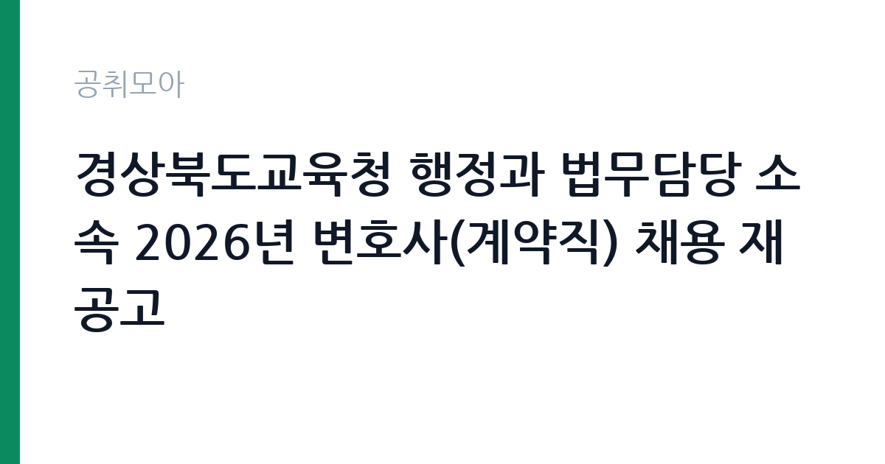

[교육청] 경상북도교육청 행정과 법무담당 소속 2026년 변호사(계약직) 채용 재공고
경상북도교육청 · 경북 · 마감 2026-11-10 (D-7) · 출처 나라일터

한눈에 보는 모집 조건
| 기관 | 경상북도교육청 |
|---|---|
| 공고명 | 경상북도교육청 행정과 법무담당 소속 2026년 변호사(계약직) 채용 재공고 |
| 고용형태 | 기간제 |
| 근무지 | 경북 |
| 게시일 | 2026-11-03 |
| 마감일 | 2026-11-10 (D-7) |
지원자격, 이렇게 읽으세요
- 변호사 1명
- 접수 ~2026-11-10 마감
- 세부 조건은 원문 공고문 확인
기간제 근로자는 근로계약 기간이 정해진 신분입니다. 계약 기간과 갱신 가능 여부가 근로계약서에 명시되며 기간 만료 시 근로관계가 종료됩니다. 결원 보충이나 특정 사업 기간에 맞춰 채용되는 경우가 많아 업무 범위가 명확합니다. 이번 공고는 경상북도교육청에서 직접 진행하는 자체 전형으로, 응시자격과 제출서류는 공고문에 항목별로 제시됩니다. 법무 직무는 변호사 자격이 필수입니다. 대한변호사협회 등록 여부와 개업 상태를 확인하며, 일부 공고는 특정 분야 경력 연수를 요구합니다. 일반임기제공무원으로 채용되면 임용 기간과 연봉등급이 정해지고, 계약직이면 근로계약 기간이 명시됩니다. 사내변호사 형태는 정규직 채용으로 수습 기간이 설정되기도 합니다. 겸직 제한과 이해충돌 방지 관련 규정을 확인해야 합니다. 서류는 접수 마감 이후 보완이 되지 않으므로 자격 요건과 증빙 서류를 마감 전에 모두 갖춰야 합니다. 공고문에 명시된 우대 사항은 해당 여부를 확인해 증빙을 첨부해야 가점이 반영됩니다. 경력 요건은 총 경력이 아니라 해당 직무 경력만 인정하는 경우가 있으니, 증명서의 직무 기술을 함께 확인하십시오.
이 공고의 포인트
이 공고의 첫 번째 포인트는 고용 형태입니다. 계약 기간이 정해져 있어 근무 종료 시점이 명확합니다. 그만큼 짧은 기간에 어떤 실적을 남길지가 중요해집니다. 두 번째는 업무 범위가 명확하다는 점입니다. 법무 직무로 채용되므로 배치 이후 담당 업무가 크게 흔들리지 않습니다. 세 번째는 근무지입니다. 경북 지역 근무로 수도권 공고에 비해 지원자 분포가 넓지 않아 상대적으로 경쟁이 분산되는 경우가 있습니다. 채용 규모가 크지 않아 면접 비중이 높은 전형이 될 가능성이 있습니다. 같은 직무 공고 중에서는 접수 마감이 가장 빨라 일정을 앞당겨 잡아야 합니다. 다만 선발 인원이 1명으로 많지 않아 자격을 갖춘 지원자가 몰리면 경쟁률이 높아질 수 있습니다.
전형은 어떻게 진행되나
채용 절차는 공고문에 안내된 순서대로 진행되며, 서류 접수 마감 후에는 추가 접수나 서류 보완이 이뤄지지 않는 것이 원칙입니다. 서류심사에서는 응시자격과 제출서류의 형식 요건을 기계적으로 확인하므로, 경력 증명서의 기간과 직무 내용이 공고의 요건과 정확히 맞아야 합니다. 면접은 지원자 수에 따라 집단면접과 개별면접으로 나뉘고, 직무 관련 질문과 상황 대응 질문이 함께 나옵니다. 합격자 발표는 개별 통보 또는 홈페이지 게시로 이뤄지며 이후 임용 절차가 진행됩니다. 전형 일정이 공고문에 날짜로 명시되어 있으니 달력에 옮겨 두고 준비하십시오.
원문에서 확인한 전형 방식
○ 모집분야 : 변호사 ○ 선발직급 : 5급 상당 ○ 고용형태 : 기간제 ○ 자격요건 : 자격증 + 경력 ○ 접수기간 : 2026년11월03일 ~ 2026년11월10일 ○ 응시방법 : 방문접수 또는 전자우편(lee0192@gbe.kr) ○ 문의처 : 054-805-3732
이런 분께 추천해요
- 변호사 자격을 보유하고 등록 요건을 충족하는 분
- 해당 분야 소송·자문 경력이 있는 분
- 공공기관 이해충돌 규정을 준수할 수 있는 분
지원 전 체크리스트
- 응시자격 요건과 경력 기준을 충족하는가 — 경력은 증명서로 입증해야 합니다
- 계약 기간과 근무 시작일·종료일을 확인했는가
- 제출서류 목록을 모두 준비했는가 — 누락 시 서류 단계에서 탈락합니다
- 접수 마감 2026-11-10 이전에 접수 방식을 확인해 제출했는가
모집 일정과 제출 타이밍
2026-11-03에 공고가 올라왔고 접수는 2026-11-10까지입니다. 남은 기간은 7일이며, 이 기간에 자격증 사본과 경력증명서, 주민등록등본 같은 기본 서류를 모두 준비해야 합니다. 경력증명서는 발급에 며칠이 걸리는 경우가 있으니 가장 먼저 신청하십시오. 접수는 온라인과 우편·방문으로 나뉘는 경우가 많고, 우편 접수는 도착 기준으로 판정되므로 마감일 소인만 믿으면 안 됩니다. 면접 일정은 서류 발표 후 개별 통보되므로 제출 후에도 연락을 받을 수 있도록 유지해야 합니다. 공휴일이 끼어 있으면 증명서 발급이 늦어질 수 있으니 발급 일정을 앞당기십시오. 경북 근무지는 시설 간 거리가 멀어 이동 시간을 넉넉히 잡아야 합니다. 마감까지 일주일 안팎이 남아 서류 준비와 증빙 발급을 병행해야 합니다. 선발 인원이 한두 명 수준이라 지원자 개개인의 서류 완성도가 그대로 평가에 반영됩니다.
직무 이해하기: 교육청
교육기관은 학교 교육과 교원 연수, 교육 행정을 담당합니다. 교육청은 관내 학교를 지원하고, 대학은 학사와 연구, 학생 지원 업무를 운영합니다. 예산과 인사 규정이 교육부 지침과 자체 규정을 함께 따르므로 절차가 엄격합니다. 법무 업무는 기관의 소송과 계약, 규정 해석을 지원하는 일입니다. 소송 사건의 진행 상황을 관리하고 준비서면 초안을 작성하며 외부 대리인과 협의합니다. 계약서 검토와 법령 해석 질의 응답, 내부 규정 정비도 주요 업무입니다. 최근에는 개인정보와 국제거래, 투자 분쟁처럼 전문 분야가 세분화되어 해당 분야 경력을 요구하는 공고가 늘었습니다. 기관 성격에 따라 자문 중심과 소송 중심으로 업무 비중이 갈립니다. 업무는 혼자 처리하기보다 부서 단위로 나눠 진행되므로 담당 구역과 협업 범위를 입사 초에 확인하는 것이 중요합니다. 현장 업무와 사무 업무의 비중은 기관의 사업 일정에 따라 계절별로 달라집니다.
자기소개서 작성 팁
법무 지원서는 수행 사건과 계약 검토 실적을 중심으로 구성하십시오. 사건 유형, 본인이 맡은 역할, 결과를 구체적으로 쓰고 지원 기관의 업무와 연결되는 분야를 강조하십시오. 정책이나 제도 개선에 기여한 경험이 있다면 차별화 요소가 됩니다. 공직 수행에 필요한 이해충돌 관리 의식을 한 문단 넣으면 신뢰를 줍니다. 문항별 글자 수 제한을 먼저 확인하고, 각 문항의 첫 문장에 결론을 배치하는 방식이 읽기 쉽습니다. 지원 동기는 기관의 어떤 사업에 기여하겠다는 한 문장으로 시작하고, 이어서 본인의 경험을 근거로 붙이십시오. 감점을 피하려면 다른 기관에 보낼 수 있는 범용 문장을 그대로 쓰지 않는 것이 중요합니다. 기관 이름과 사업명이 문장 안에 자연스럽게 들어가야 준비도가 드러납니다.
면접 준비 포인트
면접에서는 실제 사건 처리 경험과 법적 판단 능력을 확인합니다. 복잡한 법률관계를 정리해 결론을 도출한 사례를 요구하며, 기관 업무와 관련된 분야의 이해도를 봅니다. 이해충돌 상황에서 어떻게 판단할지 묻는 질문도 나옵니다. 답변은 결론과 근거 법리를 함께 제시하는 방식이 효과적입니다. 답변은 상황, 판단, 조치의 순서로 정리하면 전달이 분명해집니다. 모르는 질문에는 모른다고 밝히고 확인 방법을 제시하는 편이 억지 답변보다 낫습니다. 마지막에는 근무 의사와 함께 2026-11-10 이후 일정에 언제든 응할 수 있다는 점을 전달하십시오. 마지막 질문 시간에는 근무 조건에 대한 확인 사항을 한 가지 정도 준비해 가면 성실성이 드러납니다.
급여·근무조건 읽는 법
법무 직무의 보수는 채용 형태에 따라 구조가 다릅니다. 일반임기제공무원은 연봉등급제가 적용되어 등급별 상한액과 하한액 범위에서 연봉이 정해지고 임용 기간이 함께 명시됩니다. 사내변호사 형태의 정규직은 기관 임금체계와 성과급 규정을 적용받습니다. 계약직은 연봉 총액과 계약 기간이 개별로 정해지므로 총 보상 규모를 따져야 합니다. 구체적인 금액은 공고문의 보수 항목에서 확인하십시오. 2026년 최저임금은 시급 10,320원, 월 환산 2,156,880원입니다. 다만 경상북도교육청의 보수 수치는 이 글에서 확인된 공시 자료가 없어 추정해 제시하지 않았습니다. 공고문 처우 항목과 첨부된 보수표를 기준으로 확인하십시오. 알리오 2025년 결산 공시 기준 공공기관 전체 일반정규직 1인당 평균보수는 7,376만 9천원, 신입사원 평균초임은 4,031만 6천원입니다(무기계약직 미포함). 2026년 적용 최저임금은 시급 10,320원, 월 환산 2,156,880원(주 40시간·209시간 기준)입니다. 고용노동부 고시 제2025-47호로 확정된 금액입니다. 공고문에 금액이 제시되지 않은 항목은 원문 보수표나 처우 설명에서 확인해야 하며 확인되지 않은 수치는 쓰지 않는 것이 원칙입니다. 비교할 때는 월 급여뿐 아니라 상여·명절휴가비·복지포인트·초과근무수당까지 포함한 연간 총액으로 계산하십시오. 기간제라면 계약 기간 동안의 총액을, 무기계약이라면 호봉 상승과 정년까지의 누적 소득을 기준으로 판단하는 편이 정확합니다.
자주 묻는 질문
- 선발 인원은 몇 명인가요?
공고문 기준 1명입니다. 직종별로 인원이 나뉘는 경우가 있으니 모집분야 항목을 함께 확인하십시오. - 근무지는 어디인가요?
경북 지역의 경상북도교육청 소속 근무지입니다. 세부 주소와 출퇴근 조건은 원문 공고문에서 확인할 수 있습니다. - 보수는 얼마인가요?
채용 신분(기간제)과 기관 임금 규정에 따라 정해지며 구체적인 금액은 공고문 처우 항목에 제시됩니다. 금액이 공개되지 않은 경우에는 원문의 보수표를 확인하십시오.
함께 보면 좋은 공고
[교육청] 2026년도 제12회 경기도교육청 임기제공무원 채용시험 공고[통일교육전문가, 감염병예방대응관리, 전문상담사] — 마감 2026-11-13[교육청] 2027년 학교법인 영광학원 특수학교 사무직원 공개경쟁임용 계획 공고 — 마감 2026-12-01[교육청] 2026학년도 교육공무직원 조리실무사 채용 공고 — 마감 2026-11-09출처: 나라일터 공개정보를 바탕으로 공취모아가 정리한 안내글입니다. 모집 조건·일정은 변경될 수 있으니 지원 전 반드시 원문 공고문을 확인하세요. 본 글은 정보 제공용이며 합격을 보장하지 않습니다.